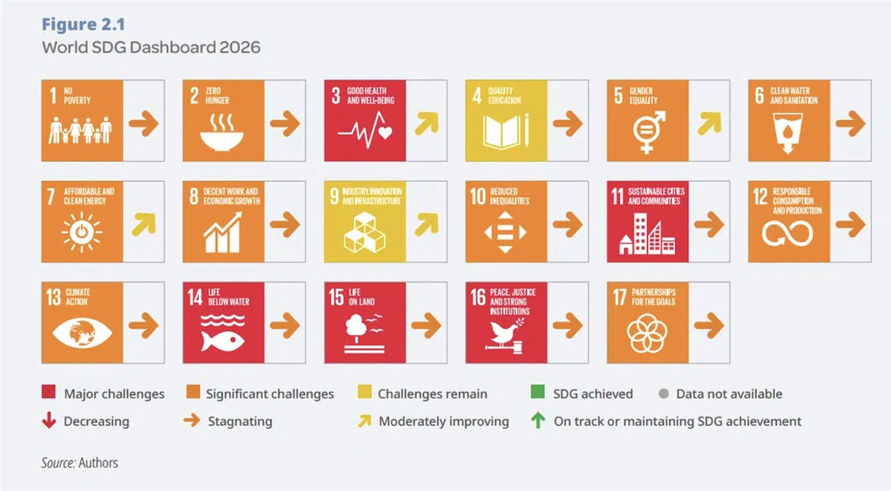

ON SOURCE: EARTH.ORG
None of 17 UN SDGs on Track to Be Achieved By 2030, Report Finds
by Earth.Org Global Commons Jun 24th 2026 3 mins
Earth.Org is powered by over 150 contributing writers
2026 marks 11 years since the adoption of the United Nations Sustainable Development Goals (SDGs), 17 goals and 169 targets to ensure human well-being, economic prosperity and environmental protection simultaneously.
More than a decade after world nations agreed on a set of goals to guide global sustainable development, progress remains “significantly off track,” according to a new analysis.
Compiled by the Sustainable Development Solutions Network (SDSN) and now in its eleventh edition, the report found that none of the Sustainable Development Goals (SDGs) is on track to be achieved by 2030, with only 16% of targets on course and 16% worsening.
Globally, SDG 11 (Sustainable Cities and Communities), SDG 14 (Life Below Water), SDG 15 (Life on Land) and SDG 16 (Peace, Justice and Strong Institutions) are particularly off track, with major challenges and stagnation in progress since 2015.
Adopted by all UN member states in 2015, the SDGs comprise 17 goals and 169 targets providing a footprint for a global partnership between developed and developing countries to achieve economic prosperity, environmental protections and to safeguard the well-being of people around the world.

The report, which tracks and ranks the performance of all UN member states on the SDGs, found that global averages mask stark disparities across regions and countries. Structural vulnerabilities as well as limited financing and investments are hindering progress, particularly in emerging and developing economies.
19 of the top 20 countries leading in SDG progress are European, with Nordic countries – Finland, followed by Sweden and Denmark – topping the ranking, in line with previous years. But even among the top performers, challenges are hindering the achievement of goals related to responsible consumption and production, climate action and the environment.
East and South Asian countries have recorded the strongest SDG progress since 2015, while India and China were among the major economies showing the largest rank improvements, according to the report.
Barbados once again topped an index tracking commitment to UN multilateralism, followed by Antigua and Barbuda, then Uruguay, Trinidad and Tobago, the Maldives, Jamaica, Mauritius, Chile, the Philippines, and Malaysia. The US ranked last for the third year in a row.
Under President Donald Trump, the US withdrew from 66 international bodies, conventions and treaties, including key climate treaties like the Paris Agreement and the Intergovernmental Panel on Climate Change. The administration also openly opposed the SDGs and the 2030 Agenda. Last year, then US representative to the UN Edward Heartney said during a UN General Assembly plenary meeting that the 2030 Agenda “advance[s] a program of soft global governance that is inconsistent with US sovereignty and adverse to the rights and interests of Americans.”
The report assesses over 100 indicators – from neonatal mortality to literacy rates, traffic deaths and daily smokers – using a blend of data sources. Two-thirds come from rigorous international bodies like the World Bank, the OECD, and the UN. The remaining third is pulled from household surveys, civil society datasets such as Oxfam and Reporters Without Borders, peer-reviewed journals, and GIS tracking. Due to insufficient data, 24 countries were excluded from this year’s index.
Featured image: Chris Yakimov.
💡How can I contribute to a more sustainable planet?
- 🗳️ Vote for climate action: Exercise your democratic rights by supporting candidates and policies that prioritize climate change mitigation and environmental protection. Stay informed with Earth.Org’s election coverage.
- 👣 Reduce your carbon footprint: Make conscious choices to reduce your carbon footprint. Opt for renewable energy sources, conserve energy at home, use public transportation or carpool, and embrace sustainable practices like recycling and composting.
- 💰 Support environmental organizations: Join forces with organizations like Earth.Org and its NGO partners, dedicated to educating the public on environmental issues and solutions, supporting conservation efforts, holding those responsible accountable, and advocating for effective environmental solutions. Your support can amplify their efforts and drive positive change.
- 🌱 Embrace sustainable habits: Make sustainable choices in your everyday life. Reduce single-use plastics, choose eco-friendly products, prioritize a plant-based diet and reduce meat consumption, and opt for sustainable fashion and transportation. Small changes can have a big impact.
- 💬 Be vocal, engage and educate others: Spread awareness about the climate crisis and the importance of environmental stewardship. Engage in conversations, share information, and inspire others to take action. Together, we can create a global movement for a sustainable future.
- 🪧 Stand with climate activists:Show your support for activists on the frontlines of climate action. Attend peaceful protests, rallies, and marches, or join online campaigns to raise awareness and demand policy changes. By amplifying their voices, you contribute to building a stronger movement for climate justice and a sustainable future.
For more actionable steps, visit our ‘What Can I do?‘ page.
ON SOURCE: EARTH.ORG